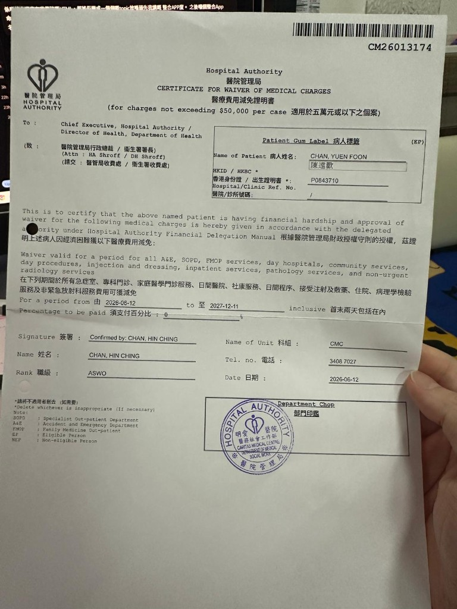
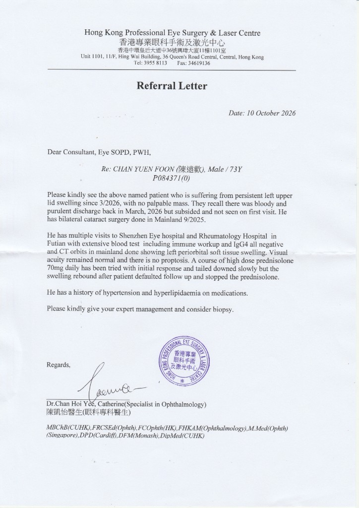
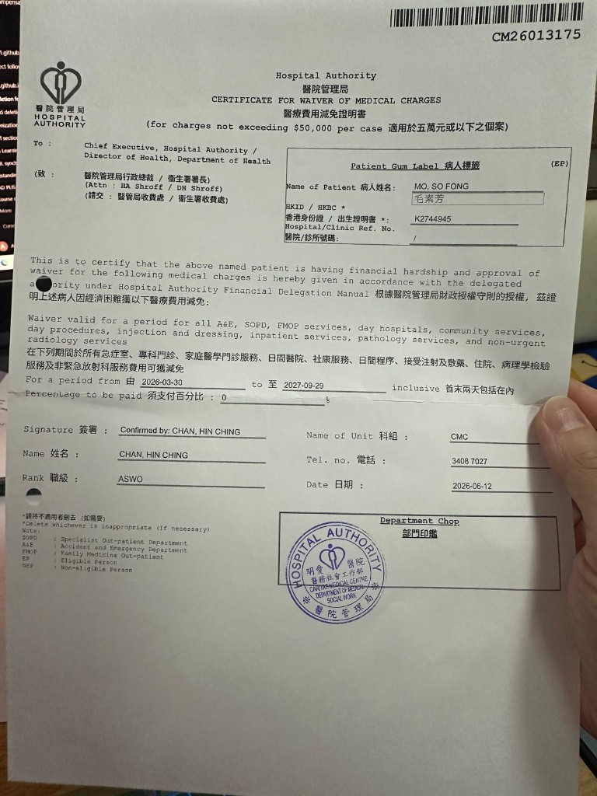

陳遠歡 CHAN, YUEN FOON
CM26013174| 身份 | 合資格人士 HKBC |
|---|---|
| 身份證 | P0843710 |
| 有效期 | 2026-06-12 至 2027-12-11（首尾兩天包括在內） |
| 須支付 | 0% |
| 範圍 | 急症室、專科門診、家庭醫學門診、日間醫院、社康、日間程序、注射及敷藥、住院、病理學檢驗、非緊急放射科 |
| 科組 | 明愛醫院 CMC · 內科 · 醫務社會工作部 |
| 電話 | 3408 7027 |
| 簽署 | CHAN, HIN CHING · ASWO · 2026-06-12 |

醫管局醫療費用減免證明。每宗不超過 $50,000。須支付百分比係 0，即係呢段期間內列明嘅服務費用獲減免。陳遠歡另有 2026-10-10 眼科轉介信同 2026-05-23 醫療報告。
| 身份 | 合資格人士 HKBC |
|---|---|
| 身份證 | P0843710 |
| 有效期 | 2026-06-12 至 2027-12-11（首尾兩天包括在內） |
| 須支付 | 0% |
| 範圍 | 急症室、專科門診、家庭醫學門診、日間醫院、社康、日間程序、注射及敷藥、住院、病理學檢驗、非緊急放射科 |
| 科組 | 明愛醫院 CMC · 內科 · 醫務社會工作部 |
| 電話 | 3408 7027 |
| 簽署 | CHAN, HIN CHING · ASWO · 2026-06-12 |

2026年10月10日，香港專業眼科手術及激光中心陳凱怡醫生（眼科專科）轉介威爾斯親王醫院眼科專科門診（Eye SOPD, PWH）。診所在中環皇后大道中36號興瑋大廈11樓1101室。電話 3955 8113。傳真 34619136。
陳遠歡，男，73歲。2026年3月起左上眼瞼持續腫脹，摸不到腫塊。2026年3月曾有帶血及膿性分泌，其後消退，首次應診時已見不到。2025年9月在內地做過雙眼白內障手術。
曾到深圳眼科醫院同福田風濕科醫院。免疫檢查同 IgG4 陰性。內地眼眶 CT 顯示左眼眶周軟組織腫脹。視力正常，沒有眼球突出。曾每日口服潑尼松龍 70 毫克，初時有反應，其後慢慢減藥；沒有覆診並停藥之後，腫脹反彈。
有高血壓同高血脂，正在服藥。請專科處理，並考慮活檢。
醫療報告係 2026年5月23日整理，內容係左眼瞼腫脹同眼眶炎症。

| 身份 | 合資格人士 HKBC |
|---|---|
| 身份證 | K2744945 |
| 有效期 | 2026-03-30 至 2027-09-29（首尾兩天包括在內） |
| 須支付 | 0% |
| 範圍 | 急症室、專科門診、家庭醫學門診、日間醫院、社康、日間程序、注射及敷藥、住院、病理學檢驗、非緊急放射科 |
| 科組 | 明愛醫院 CMC · 內科 · 醫務社會工作部 |
| 電話 | 3408 7027 |
| 簽署 | CHAN, HIN CHING · ASWO · 2026-06-12 |
